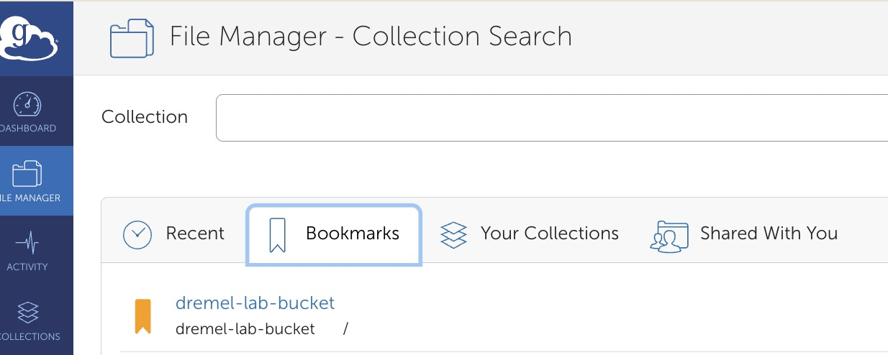
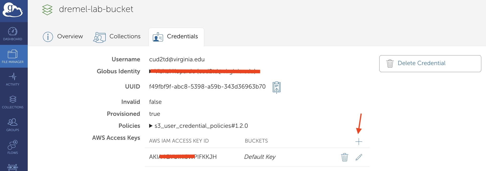
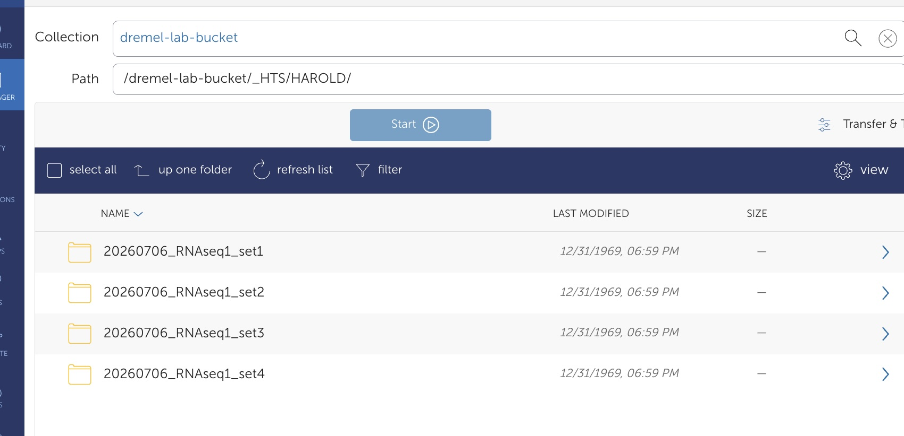

Getting Access to Dremel Lab S3 Files via Globus
Step-by-step guide for Dremel Lab members
Getting Access to Dremel Lab S3 Files via Globus
Time to complete: 5-10 minutes
Prerequisites: Active virginia.edu account with Globus access
Overview
This guide walks you through accessing Dremel Lab’s S3 storage via Globus, a data transfer platform that provides a web GUI for managing files.
Why Globus instead of direct AWS credentials?
- GUI interface: Much easier than command-line AWS tools
- Centralized access: Everyone uses Globus with a shared S3 connector—no need to distribute individual AWS accounts
- Security: Credentials are managed through UVA’s institutional login, not stored locally on your machine
By the end, you’ll be able to browse, upload, download, and manage Dremel Lab files through Globus.
Prerequisites
Before you start, make sure you have:
- ✓ Active UVA computing account (virginia.edu email)
- ✓ Part of Dremel Lab (you should have access to the
#dremellabSlack channel) - ✓ Internet access to Globus and UVA systems
If you need AWS SA credentials: Rivanna users can find them at /project/dremel_lab/scripts/aws_globus_sa_credentials.txt. If you don’t have Rivanna access, email the lab PI (qdt2nz@virginia.edu (Sarah Dremel)) and they will send you the credentials file.
Step-by-Step Instructions
Step 1: Access Globus via UVA
- Open your browser and navigate to https://www.globus.org/
- Click “Log In” (top right)
- In the “Organization” field, type or select “University of Virginia”
- Click the UVA option when it appears
You’ll be redirected to the UVA NetBadge login page.
Step 2: Log In with UVA NetBadge
- Enter your UVA NetID (the part before @virginia.edu) and password
- Complete any multi-factor authentication (MFA) if prompted
- You’ll be redirected back to Globus
You should now see the Globus web interface. If you see “Search Collections” or a file transfer page, you’re logged in successfully.
Tip: Bookmark https://www.globus.org/ for future logins.
Step 3: Find the Dremel Lab S3 Bucket
- On the Globus home page, look for the “Search Collections” or “Collections” field
- Type “dremel-lab-bucket” (or ask your lab PI for the exact collection name if different)
- Click Search
- The collection should appear in the results
If the collection doesn’t appear: You need to request collection access. Open a support ticket at https://forms.rc.virginia.edu/form/support-request/ or email HPC Support requesting access to the
dremel-lab-bucketGlobus collection. This request requires approval from Sarah Dremel (qdt2nz@virginia.edu) before access is granted. Allow 1-2 business days for processing.
Step 4: Connect to the Collection
- Click on the “dremel-lab-bucket” collection when it appears
- Globus will verify your credentials and access permissions against the S3 connector configuration
- Once connected, you should see the folder structure inside
- Bookmark this collection for quick access in the future by clicking the bookmark icon
You’re now browsing the Dremel Lab S3 files!
Once bookmarked, the collection will appear in your Bookmarks tab, so you can easily access it next time without searching:

Adding S3 Credentials:
To access the S3 bucket contents, you need to add AWS S3 credentials to Globus:
- In the Globus File Manager, look for the “+” button or “Manage Credentials” option in the collection details
- Click the “+” button to add new credentials
- Select Amazon S3 as the credential type
- Enter the AWS Access Key ID and Secret Access Key from the credentials file
- Save the credentials

Once credentials are added, Globus can access and transfer files from the S3 bucket.
Note: The AWS SA credentials and access permissions are stored in
/project/dremel_lab/scripts/aws_globus_sa_credentials.txton Rivanna. Rivanna users can reference this file if needed for direct S3 access or troubleshooting.
Step 5: Test Basic Operations & Understand Folder Structure
Project Folder Organization:
The Dremel Lab S3 bucket is organized by project. Pipeline outputs are stored in the _HTS/ folder and its subfolders. Here’s a typical project hierarchy:

Key folders structure:
_HTS/— Contains all high-throughput sequencing (HTS) pipeline outputs{pipeline}— Name of pipeline that generated this output eg. HAROLD{sample_set_name}/— Project-specific folders- Subfolders depend on which pipeline was run to generate the outputs. Common subfolders include:
raw_data/— Raw sequencing readsqc/— Quality control resultsalignment/— Aligned BAM files and indicescounts/— Gene/transcript count matriceslogs/— Pipeline execution logs
- Subfolders depend on which pipeline was run to generate the outputs. Common subfolders include:
Important: The exact subfolders under each sample sheet or sample set will vary depending on the specific pipeline used (e.g., RNA-seq pipeline, ATAC-seq pipeline, etc.).
Typical Workflow:
- Pipeline outputs are automatically uploaded from Rivanna pipeline runs directly into the
_HTS/folder—you don’t manually upload to this location - You download data from existing HTS outputs for analysis, visualization, or backup
- Write access is limited to avoid accidental modifications of pipeline results
Test your access:
- Browse to the
_HTS/folder to see the project structure - Navigate to an existing sample set folder inside the appropriate pipeline outputs to see the pipeline-generated outputs
- Select a file from an existing output folder (e.g., a QC report or log file)
- Try to download the file to your computer
If you can browse folders and download files, you have the access you need.
Note: Do not create or modify files in the
_HTS/<PIPELINE>folder—these are pipeline outputs and should remain unchanged. New data is added only through Rivanna pipeline runs.
What You Can Do Now
With Globus access, you can:
- Download files from pipeline outputs in the
_HTS/<PIPELINE>folder (this is the primary use case) - Browse the folder structure to find your sample sets and results via the web GUI
- Share files with lab members via Globus sharing links
Note: Pipeline outputs are automatically uploaded from Rivanna to the _HTS/<PIPELINE> folder—manual uploads are handled by the pipeline infrastructure, not by individual users.
Understanding S3 Storage Classes & File Restoration
Pipeline outputs in the _HTS/<PIPELINE> folder are stored in two different S3 storage classes depending on file size:
Storage Classes Explained
Glacier Instant Retrieval (Glacier IR) — Downloadable via Globus
- Smaller files and metadata are stored here
- These files can be downloaded directly through Globus without any delays
- Examples: QC reports, log files, configuration files, small count matrices
Glacier (Flexible Retrieval) — Restored automatically, takes a few hours
- Large files (e.g., BAM files, raw sequencing reads, large matrices)
- Cannot be read instantly, but no manual restore request is needed anymore — Globus restores archived Glacier objects automatically as part of the transfer.
✅ Resolved (2026-08-31): Glacier restore support (
--s3-restore) is enabled on the Dremel Lab S3 Globus collection (dremel-lab-bucket). Previously this required emailing Sarah Dremel to manually restore each Glacier object; that manual step is no longer necessary. See HPC ticket RIV-20794 — “Enable Glacier restore support on the Dremel Lab S3 Globus collection” — closed by Research Computing after a successful real-world test.
How to Download Glacier Files
Just start the download/transfer in Globus as normal — no email or manual request required:
- Select the Glacier file and start the download/transfer in Globus as you would any other file
- Globus detects the object is archived and automatically submits an AWS restore request on your behalf
- Wait for the restore to complete — configured for Standard tier, typically 3-5 hours
- Globus finishes the transfer automatically once the object is restored — you don’t need to retry or come back to re-trigger anything
- The restored copy stays available for 5-7 days (
restore_days), so it’s fine if a large multi-file transfer takes a while to work through the queue
Example Scenario
You start downloading: _HTS/my-sample-set/alignment/sample1.sorted.bam
↓
Globus detects the object is archived in Glacier
↓
Globus automatically submits the AWS restore request (Standard tier, ~3-5 hours)
↓
Globus waits, then completes the transfer automatically
↓
Restored copy remains available for 5-7 days if you need it againImportant Notes
⚠️ Plan ahead: Restoration still takes a few hours (Standard tier, ~3-5 hours), so a Glacier download won’t complete instantly — kick off large/Glacier transfers before you need the files. ⚠️ Large or multi-file transfers: Restored copies stay available for 5-7 days, which gives Globus enough time to work through big batches without files expiring mid-transfer. ℹ️ If a Glacier transfer still fails: This used to require emailing Sarah Dremel for a manual restore. Since the fix above, a failure more likely means a permissions or connector issue — report it in
#dremellabor to Research Computing rather than requesting a manual restore.
Troubleshooting
“I can’t find dremel-lab-bucket in search results”
Cause: Collection name might be different, or you don’t have permission yet.
Fix:
- Check the exact collection name in the
#dremellabSlack channel (pinned message or topic) - Confirm with your lab PI that you’ve been added to the collection’s access list
- If still missing after 1-2 hours, contact Research Computing via rc.virginia.edu support
“Permission denied” when trying to access the collection
Cause: Your UVA account is authenticated, but you haven’t been granted access to this specific collection.
Fix:
- Ask your lab PI or the person who manages the S3 bucket to add your UVA username to the access list
- Wait 5-10 minutes for permissions to propagate
- Log out of Globus (top right menu → Log Out) and log back in
- Try again
“I’m not seeing the Globus transfer page after login”
Cause: Browser issue or Globus session timeout.
Fix:
- Clear your browser cache (Ctrl+Shift+Delete or Cmd+Shift+Delete on Mac)
- Log out of Globus completely
- Close your browser tab and open a fresh Globus window
- Log in again
“I don’t have a UVA account or Rivanna access”
Option 1: Use Globus (recommended) Email the lab PI (qdt2nz@virginia.edu (Sarah Dremel)) for help getting UVA account access or Globus configured.
Option 2: Direct S3 access via AWS credentials
- Email the lab PI asking for the AWS SA credentials file
- They’ll send you
aws_globus_sa_credentials.txt(which contains Access Key ID and Secret) - Configure your local AWS CLI or SDK with these credentials to access S3 directly
- This bypasses Globus but requires CLI tools like
aws s3commands
Download of a large file is slow to start or shows “restoring”
Cause: Large files in the _HTS/ folder are stored in Glacier (Flexible Retrieval). As of 2026-08-31, Globus automatically restores these on transfer — no manual request needed — but the restore itself still takes time.
Fix:
- Just start the transfer in Globus as normal
- Globus automatically submits the restore request and waits; expect roughly 3-5 hours (Standard tier) before the transfer completes
- No action needed on your part — do not email for a manual restore, this is now automatic
Tip: If you need multiple large files, start them all as one transfer — the restored copies stay available for 5-7 days, so Globus has plenty of time to work through the queue.
If the transfer errors out instead of restoring: This is no longer expected behavior. Report it in #dremellab or contact Research Computing — it likely indicates a permissions or connector issue, not something a manual Glacier restore would fix.
Key Points to Remember
✓ No individual AWS accounts: Everyone uses Globus with the shared S3 connector—simpler and more secure.
✓ UVA login is your key: Your virginia.edu credentials authenticate you to Globus and authorize S3 access.
✓ No downloads needed: Globus is web-based. You don’t need to install anything (unless you use Globus CLI).
✓ Permissions take time: If you’re newly added to a collection, it may take 5-10 minutes for access to activate.
✓ AWS SA credentials available: Rivanna users can find credentials at/project/dremel_lab/scripts/aws_globus_sa_credentials.txt. Non-Rivanna users can email the lab PI.
✓ Glacier restore is automatic: As of 2026-08-31, Globus automatically restores Glacier-archived files during transfer (~3-5 hours, available 5-7 days) — no manual email request needed.
✓ Ask in Slack if stuck: The#dremellabchannel is your fastest way to get help from the team.
Need Help?
- Slack: Ask in
#dremellab - Email: Sarah Dremel, qdt2nz@virginia.edu (qdt2nz)
- UVA Research Computing: https://www.rc.virginia.edu/support/
Last updated: September 2026
Maintained by: Dremel Lab